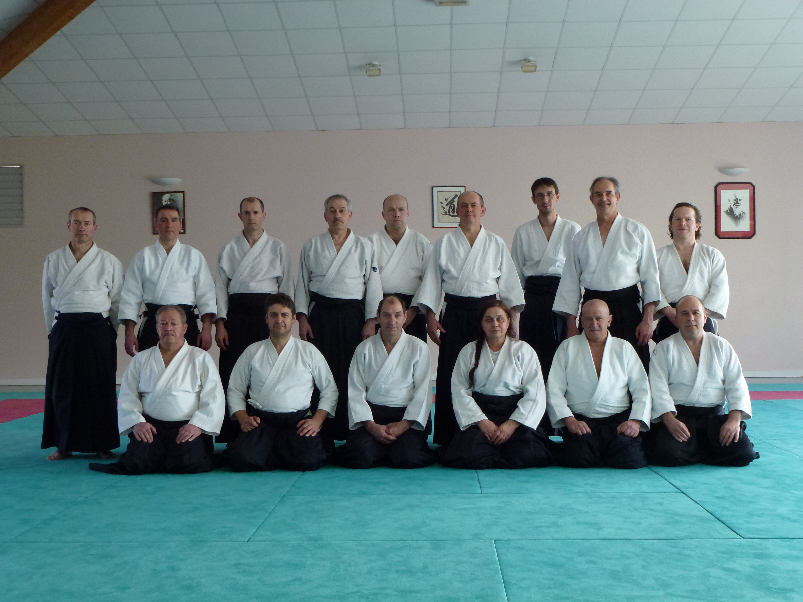

SANTE
-----------------------------------------------
Ecole des Cadres de Moselle
du 02 avril 2011
"École des cadres Moselle du 2 avril 2011 à Rémilly, le thème de cette école, L'EAU. Nous avons survolé des extraits du livre de l'auteur Japonais MASARU EMOTO (Message de l'eau-cristaux d'eau en mouvement) il nous permet de découvrir les vertus de l'eau et comment l'eau réagit à toutes sortes d'influences comme: la musique & les mots, les images & la pensée!

-----------------------------------------------
UN DOJO SE MOBILISE
Club
de METZ-NORD :
Bilan de notre action contre la mucoviscidose
dans le cadre des VIRADES 2006
|
Qu'est qu'une virade ? Mot auvergnat issu du mot VIREE, journée nationale de lutte contre la mucoviscidose organisée par l'association VAINCRE LA MUCOVISCIDOSE But de ces journées
: INFORMER, RENCONTRER, COLLECTER DES FONDS.
C'est la maladie
génétique la plus fréquente de la race blanche
(une naissance sur 2.000). La moyenne de durée de vie est de 16 ans. Consulter le site : http://www.vaincrelamuco.org/ La 14ème virade de l'espoir de METZ : En ce dimanche 24 SEPTEMBRE 2006, la plupart des pratiquants du club de METZ NORD (ainsi que des ex- pratiquants restés fidèles) étaient au rendez vous pour participer activement à la 14ème virade de l'espoir de METZ, auprès des parents et des familles des malades.Depuis 1997 que nous oeuvrons côte à côte, l'association MUSUBI est devenue l'un des partenaires priviligiés de VAINCRE LA MUCOVISCIDOSE pour l'organisation de la VIRADE de METZ. Tout le monde a mis la main à la pate : récolte de notre association 6.200 € à ce jour qui iront intégralement à la recherche médicale. Bien entendu, de nombreux amis se sont mobilisés avec nous pour tenir les 20 stands et assurer 5 heures de spectacles - animation sur le plan d'eau de METZ : des troupes d'artistes professionnels ont accepté de se joindre à nous bénévolement... Mille mercis à tous les Viradeurs et rendez vous l'année prochaine le 30 septembre 2007 pour la 15ème VIRADE DE METZ!
Geneviève DUC
|
Cliquer
sur les images.
Les
co-organisatrices et coordinatrices de la Virade de Metz |
|
Léa
- la plus jeune pratiquante
du dojo de METZ NORD a participé à la démonstration au profit de la virade... gros coup de main dans les stands ... toute la journée du 24 ! |
|
Victor - le blond au pied de l'estrade Pratiquant au dojo
de metz nord |
|
Laura
- la petite à
droite!
pratiquante
au dojo de METZ NORD |
|
Christophe - VIRADEUR convaincu et pratiquant au dojo de METZ NORD ! participant à la démonstration de la VIRADE depuis 2 ans mobilisé toute la journée aux stands jeux et ballons |
|
Francis
- pratiquant à METZ NORD et participant à la démonstration de la VIRADE |
|
Jean-Christophe (JESUS) du Club de NORROY, participant à la démonstrationde la VIRADE et volontaire toutes la journée pour apporter son aide dans les stands grand diffuseur
d'informations les semaines avant la virade (affiches et fly) |
|
Stéphane Pratiquant au dojo de METZ NORD Calligraphe de son état, a tenu un stand "Calligraphie" la Journée du 24 septembre et reversé la totlité de la somme à la VIRADE A
participé à la démonstration au plan d'eau le 24
septembre |
|
Tous
deux pratiquants au dojo de METZ NORD Pour Guillaume : participant à la démonstration d'AIKIDO au profit de la Virade pour la première fois et mobilisé du matin au soir sur le site de la virade (installation des stands, initiation au fresbee, stand crêpes...) |
|
Pratiquant
au dojo de METZ NORD |
|
Professeur
du dojo de NORROY le Veneur |
|
Pratiquante
au dojo de METZ NORD et organisatrice de la kermesse Récolte
des fonds et coordination des actions menées le dimanche 24 septembre
|
|
Pratiquante
au dojo de METZ Nord et Viradeuse de la 1ère heure...
|
|
{kind=link}
{kind=link}
{kind=link}
{kind=link}
{kind=link}
{kind=link}
{kind=link}
{kind=link}
{kind=link}
{kind=link}
{kind=link}
{kind=link}
{kind=link}
{kind=link}